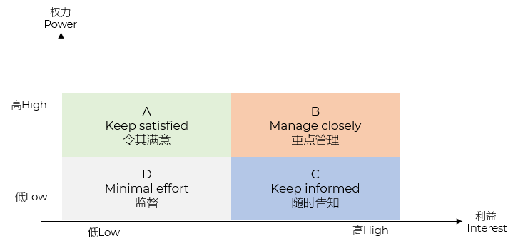
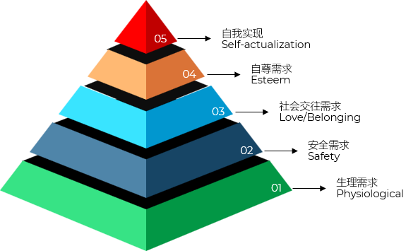

组织结构
- 职能型
- 项目由一个或多个职能部门承担
- 一个职能部门可以对接一个或多个项目
- 部门经理主抓项目
- 项目型
- 以项目为中心，项目成员全职参与，向项目经理汇报，项目结束后团队解散
- 矩阵型
- 混合型
- 兼具职能型和项目型的特点
- 临时组建
人员职责计划
- 责任分配矩阵 RAM
- Responsibility Assignment Matrix
- 责任分配矩阵应用模型 RACI
- Responsible
- Accountable
- Consulted
- Informed
责任分配矩阵应用模型 RACI
|
维护主管 |
维护计划员 |
维护技术员 |
维护经理 |
仓库经理 |
采购代理 |
| 开发工作计划模板 |
C |
AR |
C |
I |
I |
|
| 为特定工作开发工作计划 |
C |
A |
R |
|
I |
|
| 开发规划信息库 |
R |
R |
C |
A |
R |
R |
| 保持图纸更新和安全 |
A |
C |
R |
I |
I |
I |
| 成套零件的分阶段准备 |
C |
R |
C |
|
A |
|
| 订购零件 |
|
R |
|
|
I |
A |
- 组织分解结构 OBS
- Organization Breakdown Structure
项目干系人计划
- 识别 Identify Stakeholders
- 找出谁是干系人，并收集基本信息
- 评估 Analyze Stakeholders
- 分析他们的诉求、期望、影响力、权力等
- 评估的标准和依据：凸显模型 Salience Model
权力 Power
紧迫性 Urgency
合法性 Legitimacy
- 分类 Categorize Stakeholders
- 使用方格模型（如权利/利益方格）进行归类

权力利益方格 Power/Interest Grid
- 制定计划 Develop Stakeholder Management Plan
- 根据分类结果，制定沟通策略、管理方式等

马斯洛需要层次理论 Maslow's Hierarchy of Needs
项目沟通计划
- 沟通原则
- 及时 Timeliness
- 准确 Accuracy
- 完整 Completeness
- 可了解 Understandability
- 沟通方式
- 内部沟通 vs 外部沟通
- 官方沟通 vs 非官方沟通
- 正式沟通 vs 非正式沟通
- 书面沟通 vs 口头沟通
- 层级沟通：向上沟通、向下沟通、横向沟通
- 沟通渠道
- 尽量减少沟通渠道，提高效率
N(N-1)/2